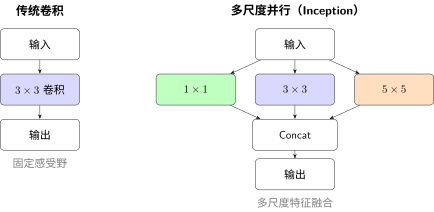
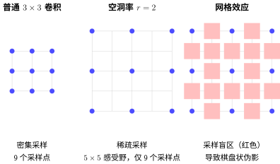
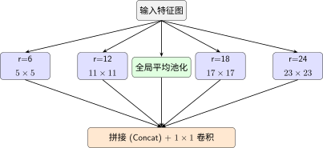
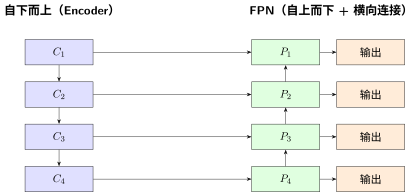
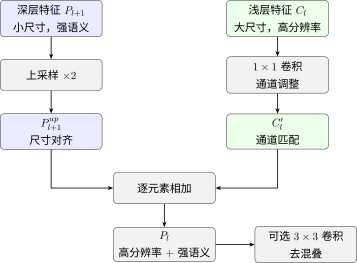

操控感受野：网络应该看多大#
感受野 告诉我们：卷积层越深，感受野越大。但 Inception：多尺度感受野的探索 揭示了一个根本问题——每一层只有一个固定大小的感受野。
这就是操控感受野要解决的核心矛盾：不同的目标需要不同大小的感受野，但传统 CNN 只有一个。
什么时候需要改造感受野#
先确认你是不是真的遇到了感受野问题：
症状 |
可能原因 |
是否感受野问题 |
|---|---|---|
大物体（占据半张图）识别差 |
感受野只能看到局部 |
是 |
同时有大物体和小物体的图效果差 |
单一感受野顾此失彼 |
是 |
所有物体识别都差 |
可能不是感受野问题 |
先检查训练 |
小物体识别差、大物体尚可 |
大感受野丢失细节 |
是 |
关键判断
如果加大卷积核尺寸（比如 3→7）能提升效果，那大概率是感受野问题。
策略一：多尺度并行#
这是 Inception：多尺度感受野的探索 的核心思想，但我们从设计心法而非架构本身来理解它。
本质：不说"用多大"，而说"都试试"。同时运行多个感受野的卷积，让网络自己选。

Inception 的多尺度并行
适用场景：你有多个大小悬殊的目标类别（比如自然图像分类）。
代价与缓解：参数和计算量增加（多个分支同时跑）。Inception：多尺度感受野的探索 中的关键创新是用 1×1 卷积先降维——在昂贵的 3×3 和 5×5 卷积之前，先用 1×1 把通道数降下来：
心法：这是一种"信息保险"——不确定感受野应该多大时，把不同大小的都保留下来。1×1 降维则是"用计算换信息"的精打细算。
策略二：空洞卷积#
改造的本质：从"会用 CNN"到"会设计 CNN" 中我们简单介绍了空洞卷积——它在不增加参数的情况下扩大感受野。现在从设计心法来理解它。
本质：用稀疏采样替代密集采样。3×3 卷积 + 空洞率 2 = 5×5 的感受野，但参数还是 9 个。Inception：多尺度感受野的探索 中我们已用 TikZ 图展示了普通卷积与空洞卷积的直观对比，这里不再重复。
设计原则：
空洞率 |
3×3 卷积的感受野 |
相当于普通 |
参数量 |
|---|---|---|---|
1 |
3×3 |
3×3 |
9 |
2 |
5×5 |
5×5 |
9 |
3 |
7×7 |
7×7 |
9 |
4 |
9×9 |
9×9 |
9 |
心法：空洞卷积是"用稀疏换取广度"。你牺牲了每个卷积核的采样密度，换来不花钱的大感受野。
代价：网格效应（Gridding Effect）
稀疏采样不是免费的午餐。当空洞率过大时，卷积核只采样输入的"离散点"，会丢失局部连续性信息，产生棋盘格状的伪影：

空洞卷积的网格效应对比
缓解策略：
不要把空洞率设得太大（通常 ≤ 16）
不同空洞率的卷积并行（ASPP），互相弥补采样盲区
适用场景：需要大感受野但参数量、计算量受限（分割任务、轻量模型）。
典型应用——ASPP（Atrous Spatial Pyramid Pooling）
DeepLab 系列的核心模块，同时并行 4 个不同空洞率的卷积（空洞率=6, 12, 18, 24）+ 1 个全局平均池化：

ASPP 结构：多空洞率并行
ASPP 与 Inception 的区别：
Inception：多个卷积核尺寸（1×1, 3×3, 5×5）
ASPP：相同卷积核，不同空洞率（3×3 with rate=6,12,18,24）
前者增加参数，后者不增加参数——都是多尺度，但代价不同。
策略三：特征金字塔（FPN）——不同深度、不同感受野#
Inception 和空洞卷积解决的是同一层的多尺度问题。但 CNN 有一个天然的多尺度结构——不同深度的层自然拥有不同感受野。
浅层特征：分辨率高、感受野小 → 适合检测小物体 深层特征：分辨率低、感受野大 → 适合检测大物体
特征金字塔网络（FPN, Feature Pyramid Network）的洞察是：不给每一层单独分配目标大小，而是在不同深度的特征之间建立信息通道，让它们对话。
心法：FPN/PAN 的本质是在不同感受野的特征之间建立信息通道。信息不仅在层之间流动，还在不同感受野之间流动。
FPN 的结构：自上而下 + 横向连接#
FPN 并不是简单的"把不同层的特征拼起来"，它有一个精妙的结构设计：

FPN 结构：自上而下路径与横向连接
为什么需要这种结构？
单纯使用深层特征的问题：分辨率太低，小物体可能已经"消失"了。单纯使用浅层特征的问题：感受野太小，看不清全局上下文。
FPN 的解决方案：
横向连接：保留浅层的高分辨率细节
自上而下路径：把深层的强语义信息传递回浅层
逐层融合：每个输出层都同时具有"高分辨率 + 强语义"
融合机制的具体操作
横向连接和自上而下路径相遇时，不是简单相加，而是有一个精心设计的流程：

FPN融合机制流程
关键设计选择：
操作 |
选项 |
FPN的选择 |
原因 |
|---|---|---|---|
上采样 |
最近邻/双线性/转置卷积 |
最近邻或双线性 |
简单高效，后续有3×3优化 |
通道调整 |
1×1卷积/直接截断 |
1×1卷积 |
可学习地选择重要通道 |
融合方式 |
相加/拼接 |
相加 |
保持通道数，计算效率高 |
后处理 |
3×3卷积/无 |
可选3×3 |
消除上采样的混叠效应 |
为什么用相加而不是拼接？
相加：通道数不变，计算效率高，适合"融合语义"
拼接：通道数翻倍，信息保留更完整但计算量大
FPN 选择相加，是因为深层的强语义已经足够指导浅层检测——目标是融合而非堆叠信息。
与 Inception 的本质区别
策略 |
多尺度来源 |
信息如何融合 |
|---|---|---|
Inception |
同一层的多个卷积核 |
拼接（concat） |
FPN |
不同深度的自然层次 |
自上而下 + 横向连接 |
Inception 是"横向并行"，FPN 是"纵向融合"。两者可以结合使用（如 PANet）。
三种策略的对比与选择#
策略 |
感受野 |
计算代价 |
适用任务 |
|---|---|---|---|
多尺度并行（Inception） |
同一层多个固定大小 |
中等（多分支） |
分类——目标大小不确定 |
空洞卷积 |
不增参扩大感受野 |
低 |
分割——需要大感受野但计算受限 |
FPN/PAN |
不同层不同感受野+融合 |
中高（上采样+融合） |
检测/分割——多尺度目标 |
设计心法
操控感受野的本质不是"选一个大小"，而是"让网络同时看到多个尺度"。
三种策略的区别仅在于实现方式：Inception 在同一层内并行多个卷积核、空洞卷积用稀疏采样换广度、FPN 利用网络深度天然的多尺度结构。
失败案例：什么情况下不该用#
案例一：MNIST 上用 Inception#
场景：MNIST 手写数字识别（\(28\times28\) 灰度图），你在第一层就加了 Inception 模块（1×1、3×3、5×5、MaxPool 并行）。
结果：
训练时间翻倍
准确率从 99.2% 降到 99.0%（或没有提升）
为什么失败：
MNIST 数字只占图像中心一小块，大小相对固定
5×5 卷积核几乎覆盖了整个数字，没有"多尺度"的必要
增加的分支引入了更多参数，但没有带来信息增益
教训：感受野策略的前提是"确实存在多尺度"。如果任务本身尺度单一（如对齐良好的人脸、固定大小的字符），多尺度就是浪费。
案例二：分割任务中空洞率过大#
场景：医学图像分割（细胞分割），你用空洞率 16 的 3×3 卷积来扩大感受野。
结果：
大细胞分割还可以
小细胞大量丢失——在特征图上彻底"消失"
为什么失败：
空洞率 16 意味着卷积核实际采样点间距为 16 像素
对于直径只有 20-30 像素的细胞，3×3 空洞卷积只能看到 3 个采样点
信息严重欠采样，小目标被"跳过"
教训：空洞卷积的上限是目标最小尺寸。如果目标只有 20 像素，空洞率不应超过 5-7。
案例三：分类任务盲目用 FPN#
场景：ImageNet 分类，你把 ResNet 改造成了 FPN 结构——多尺度输出、自上而下连接。
结果：
参数量和计算量显著增加
Top-5 准确率没有提升，甚至略有下降
为什么失败：
FPN 的核心价值是多尺度目标的定位和分类（检测/分割）
分类任务只需要一个全局判断，不需要"每层都输出"
额外的上采样和融合引入了计算负担，但没有对应的收益
教训：FPN 是为目标检测/分割设计的，不是为纯分类。分类任务用 FPN 是"杀鸡用牛刀"。
决策树：什么时候用什么#
核心原则：感受野改造是为了解决特定问题，不是为了"看起来厉害"。如果 baseline 没有明显问题，不要引入复杂度。
信息论视角：多尺度 = 多频段采样#
从信息论来看，感受野策略都是多频段采样[TPB00]：
自然界图像的互信息分布在不同的空间频率上
小感受野捕捉高频（细节），大感受野捕捉低频（全局结构）
单一感受野 = 信息窄带采样，丢失其他频段的信息
多尺度策略 = 宽带采样，最大化 \(I(X;Y)\)
改造的本质：从"会用 CNN"到"会设计 CNN" 中讨论的信息漏斗问题，感受野的操控策略本质上是在空间维度上拓宽漏斗的入口——不止截取一个频段，而是同时截取所有频段。
下一步#
操控感受野解决了"看什么"的问题。但光看还不够——信息必须在网络中有效地流动，梯度必须能传回来。这就是下一节操控深度与连接：信息如何在网络中流动要解决的问题。
参考文献#
Naftali Tishby, Fernando C Pereira, and William Bialek. The information bottleneck method. arXiv preprint physics/0004057, 2000.
贡献者与修订历史
查看详细修订记录
-
f159d562026-05-08 - Heyan Zhu: fix: address complaints from the linter -
4a1cae82026-05-03 - Heyan Zhu: docs(model-architecture): convert decision trees to mermaid diagrams -
15d1b152026-05-03 - Heyan Zhu: docs(model-architecture-design): add new chapter on CNN architecture design methodology